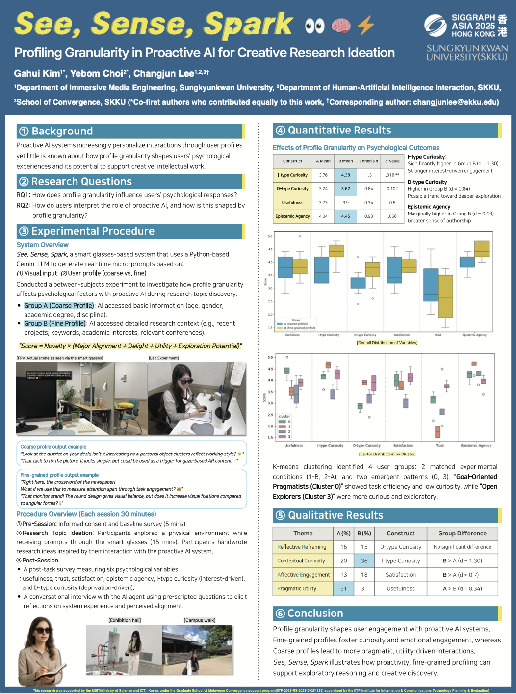
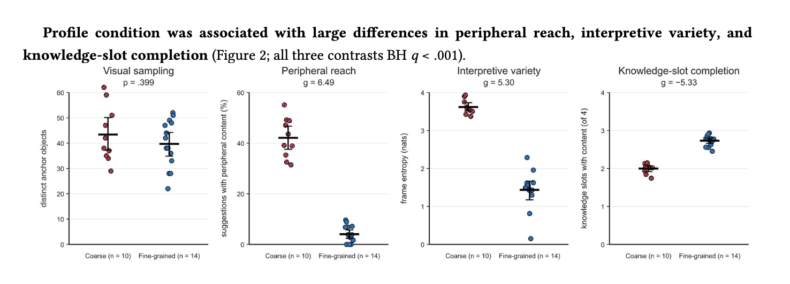
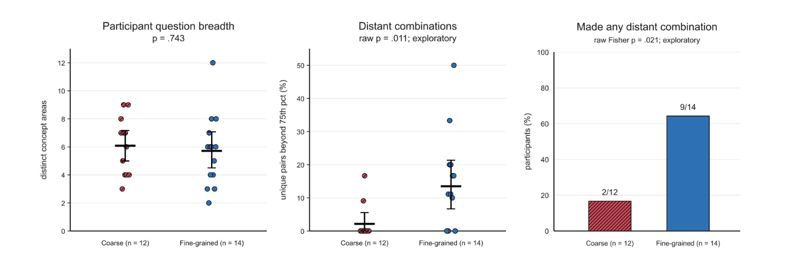

Enough context to orient the AI
Academic degree and discipline gave the system a broad starting point while leaving more room to search beyond a current topic.
SIGGRAPH Asia 2025 Posters · Proactive AI · Smart Glasses
Profiling Granularity in Proactive AI for Creative Research Ideation
Abstract
Proactive AI systems are a new paradigm for supporting cognitively demanding tasks by anticipating user needs and providing timely interventions. While prior creativity research often suggests that broad, less constrained information cues can enhance associative flexibility, it remains unclear how deeply these systems should understand users to improve their thinking. This paper explores the psychological effects of profiling granularity on creative research ideation. Using a proactive AI system called See, Sense, Spark, we conducted a between-subjects study comparing coarse and fine-grained user profiling. Contrary to our initial hypothesis, participants with fine-grained profiles showed significantly higher I-type curiosity. This result establishes profiling granularity as a core design parameter for proactive AI, highlighting that topical relevance can outweigh breadth in stimulating exploratory reasoning. We conclude by suggesting the need for adaptive systems that can balance both breadth and relevance to foster meaningful human-AI collaboration in complex cognitive tasks.
How much should proactive AI know about you to help you discover an idea you would not have reached alone?
In one minute
We built a smart-glasses system that notices objects in the environment and turns them into short research provocations. We compared a coarse researcher profile with a fine-grained one to see how personal context changes curiosity, perceived agency, and the form of the ideas that AI offers.
Fine-grained profiles increased interest-driven curiosity in the original study. A larger follow-up then revealed a more careful lesson: broader AI output does not automatically become broader human thinking.
Together, the studies treat personalization as more than a relevance setting. The amount of user information available to the system changes where it searches, how it frames an object, and what kind of cognitive work remains for the person.
The system
A first-person camera captured the scene. The system identified a primary object, searched for a peripheral connection, generated candidate provocations, and delivered only ideas that passed a novelty–relevance scoring gate.
Each candidate was evaluated for novelty, disciplinary alignment, delight, utility, and exploration potential. This filtering step was important: proactive assistance should contribute at the right moment without turning the visual field into a stream of noise.

Academic degree and discipline gave the system a broad starting point while leaving more room to search beyond a current topic.
Research keywords, venues, and current focus helped the system connect unfamiliar objects to an existing line of inquiry.
The comparison
Participants explored a physical room for fifteen minutes while receiving environment-aware micro-prompts. Afterward, we measured curiosity, usefulness, trust, satisfaction, and epistemic agency, then examined how participants described the experience.
The room, device, interaction time, and prompt-delivery process remained constant. Only the profile policy changed, allowing us to examine how the specificity of personal context altered the psychological experience of the same proactive system.

What changed
Fine-grained profiles produced higher I-type curiosity, with a large effect, and a marginal increase in epistemic agency. Coarse-profile participants more often described prompts in pragmatic, utility-oriented terms. Satisfaction and trust did not separate as clearly.
The pattern challenged our initial prediction that broader, less constrained cues would be more stimulating. For this task, topical relevance appears to have helped participants stay engaged long enough to explore a suggestion rather than merely notice it.

The study evolved · Full paper submitted to CHI 2027
The SIGGRAPH Asia poster established profile granularity as a psychological design parameter: fine-grained profiles increased interest-driven curiosity. The full-paper follow-up expands the question from how users felt to what the system generated and what people ultimately developed into ideas. It studied 26 researchers and 24 complete interaction logs.
Peripheral-object content appeared in 42% of coarse-profile suggestions versus 4% of fine-profile suggestions, while new interpretive frames appeared in 86% versus 26%. Fine-grained sessions instead retained factual-slot content more often, showing that the two policies changed the form of support even when prompt activity was similar.
We describe this cross-level separation as the system–participant divergence gap. It is not evidence that people failed to use the AI. It is evidence that system-level variety should not be treated as a proxy for human creative breadth.


What this changes
Profile granularity is not simply a privacy setting. It changes whether proactive AI searches across distant objects and frames or works more deeply within a researcher’s existing domain. The useful setting may therefore change across phases of creative work.
A system might begin broadly during exploration, then introduce more detailed profile context when a user chooses an idea to elaborate. Evaluations should likewise separate what the model generated from what the person ultimately understood, selected, and developed into their own question.
Measure both levels. Diverse model output is not evidence of diverse human thought.
Connect distance to ownership. Surprise matters only when a person can interpret and reshape it.
Adapt over time. Coarse context may support exploration; fine context may help elaborate an idea.
Citation
Kim, G., Choi, Y., & Lee, C. (2025). See, Sense, Spark: Profiling Granularity in Proactive AI for Creative Research Ideation. SIGGRAPH Asia 2025 Posters, Article 12, 1–3.
https://doi.org/10.1145/3757374.3771458 ↗